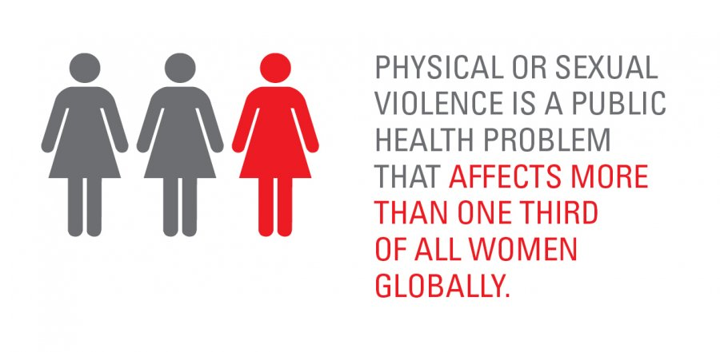

Page Content
Page Content
Gender-based violence refers to any form of violence directed at an individual because of their gender or that disproportionately impacts individuals of a specific gender.
Violence against women is recognized as a serious violation of human rights and a form of discrimination. It encompasses all acts of gender-based violence that result in, or have the potential to result in, physical harm, sexual harm, psychological trauma, or economic distress, leading to suffering for women. This includes violence within domestic settings, affecting not only women but also men and children living within the same household. While women and girls are the primary victims of gender-based violence, its detrimental effects extend to families and entire communities, causing widespread harm and instability.
Gender-based violence can take various forms
Sexual violence includes any non-consensual sexual act or behavior that violates a person's autonomy. Rape and sexual assault are among the most severe forms, often causing deep physical and psychological trauma. Sexual harassment, such as unwanted advances or inappropriate remarks, creates hostile environments, particularly in workplaces and schools. Forced prostitution and trafficking involve coercion and exploitation, depriving individuals of their freedom and dignity. Revenge pornography, where explicit images are shared without consent, leads to severe emotional distress and reputational harm
Psychological or emotional abuse undermines a person's sense of self-worth and security. Intimidation and threats create a climate of fear, making victims feel powerless. Gaslighting and manipulation distort reality, causing confusion and self-doubt. Stalking and cyberstalking involve persistent harassment that invades a person's privacy and induces anxiety. Controlling behavior, such as isolating someone from friends or dictating their actions, erodes their independence and self-confidence.
Physical violence encompasses acts that inflict bodily harm or pose a direct threat to a person's safety. Domestic violence occurs within intimate relationships and can involve hitting, choking, or other forms of assault. Honor killings, often justified by cultural or family beliefs, tragically end lives based on perceived dishonor. Physical assault extends beyond the home, manifesting in attacks that cause injuries or fatalities. These acts reinforce power imbalances and leave lasting physical and emotional scars.
Financial abuse restricts a person's economic independence and autonomy. Controlling access to financial resources forces victims into dependency, making escape from abusive situations difficult. Preventing someone from working or earning money isolates them financially, limiting their ability to support themselves. Withholding money or essential needs, such as food or medical care, creates financial instability and increases vulnerability to further abuse. This form of violence often goes unnoticed but has devastating long-term effects.